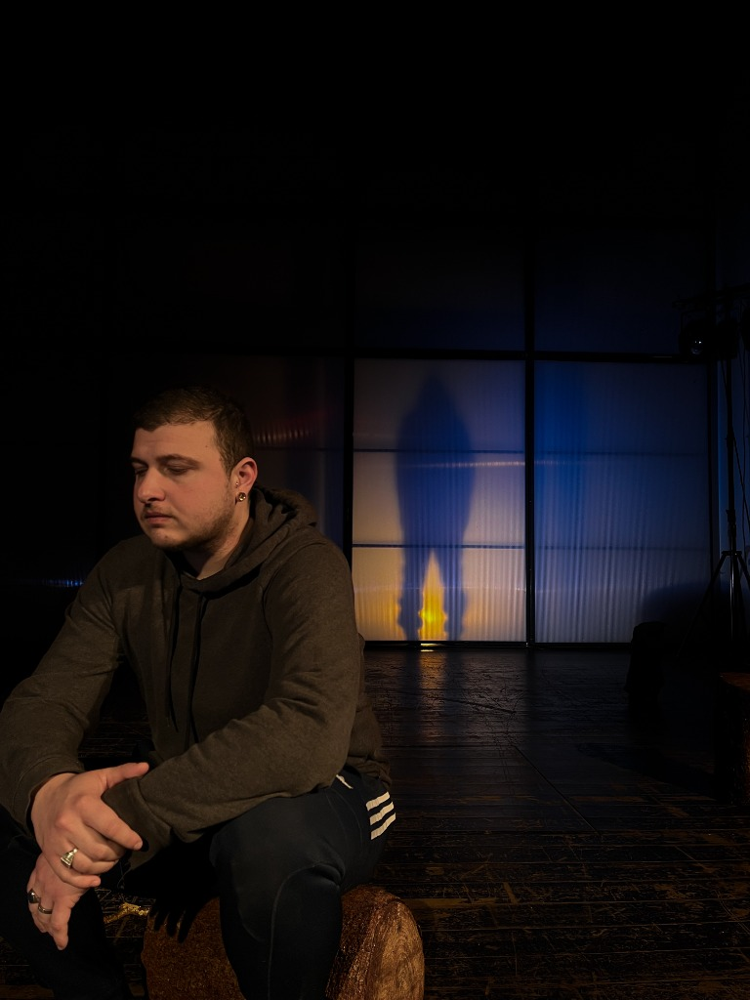
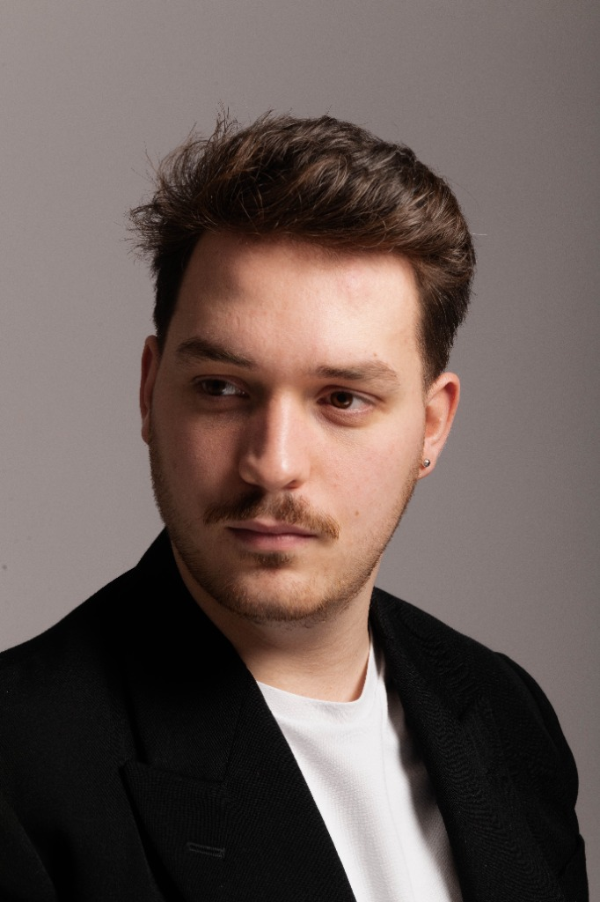
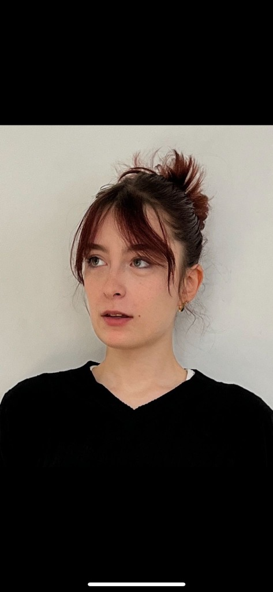

Le Collectif
Qui sommes-nous ?
Démarche
On écrit, on improvise, on joue, on se trompe, on recommence.
Le travail se construit dans cet aller-retour entre les idées et le plateau. Une scène apparaît.
On la teste. Elle fonctionne — ou pas. On la déplace. On la transforme. On écoute ce qu'elle
provoque.
Nous défendons une fabrique théâtrale horizontale et multidisciplinaire. Comédien·nes, dramaturges, scénographes et musicien·nes croisent leurs regards dès les premières recherches, faisant du plateau, de l'improvisation et de l'écoute le cœur de notre travail.
Nous aimons les textes qui continuent de nous parler longtemps après leur époque. Shakespeare en
fait partie.
Pour nous, les classiques ne sont pas des monuments intouchables. Ils peuvent devenir des
compagnons de route, des miroirs, parfois même des refuges.
Et puis il y a le public.
Nous voulons que le théâtre puisse continuer après le spectacle : dans une discussion, un
atelier, une rencontre, une question posée dans une classe ou simplement dans ce qui reste en
sortant de la salle. Nous voulons que chacun·e puisse trouver sa place pour parler, écouter,
questionner ou simplement être là. La scène n'est pas une fin en soi, mais l'amorce d'un
dialogue.
Notre recherche se construit pas à pas, avec la volonté de rester attentifs aux voix qui nous entourent et de donner à chaque étape sa propre identité. Ce qui nous relie, c'est la conviction que le théâtre peut rassembler, éclairer et déplacer les regards.

Histoire
L’Onyral Collectif est né autour d'une envie commune : jouer ensemble et inventer notre propre manière de travailler. Issu·e·s du Conservatoire royal de Mons et enrichi·e·s de complicités, nous avons ressenti le besoin d'unir nos voix et nos pratiques pour porter un théâtre ancré dans le réel, au plus près des gens.
Puis il y a eu Au Feu !
Une première histoire.
Un premier personnage.
Des premières questions.
Après nos premiers essais au plateau en 2025/2026, Au Feu ! est devenu notre première aventure commune. Nous sommes encore au début et nous avons envie de prendre le temps de construire.
Fondateur·trices

Un petit mot de l'artiste
A travers ce projet, je cherche à éveiller la curiosité, à déclencher l'imaginaire et à offrir un moment d'émerveillement. Je cherche ce qui se passe entre le texte et le corps. Pour moi, l'art de la scène doit être un espace de liberté, d'émotion et de rencontre.
Sébastien Filipozzi
Comédien /
Metteur en scène

Un petit mot de l'artiste
En cours...
Margaux Monard
Comédienne /
Metteuse en scène